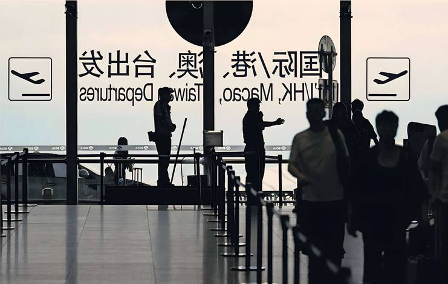
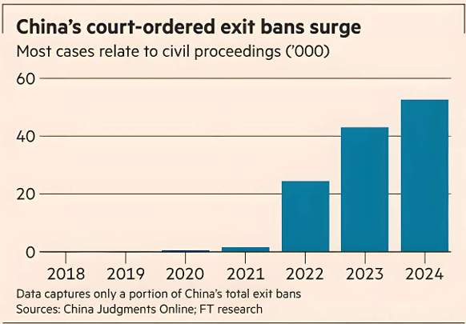

Republicans in the House of Representatives are seeking to defund the OECD as the Trump administration widens its assault on American participation in international organisations.
They are pressing ahead with legislation that would end Washington’s funding for the Paris-based club of mostly rich nations amid anger over its role in global tax rulemaking, which they argue unfairly targets US companies.
“The committee does not support the work of the OECD that promotes higher tax rates, corporate tax floors and digital tax schemes that target American taxpayers,” Republicans on the House appropriations committee wrote in a report recommending the bill.
It comes after G7 countries agreed at Washington’s request last month to exempt US companies from some parts of the global minimum tax regime.
In return, the administration withdrew section 899 of US President Donald Trump’s “big, beautiful bill,” which had threatened to increase taxes for countries with “discriminatory” levies.
The legislation passed the committee stage last week. It must be passed by the full House, which is on summer recess, and the Senate to become law.
The threatened funding cuts mark the latest push by the Trump administration to curb support for the OECD, which received about 18 per cent of its €235mn 2025 operating budget from Washington. It comes amid a broad retreat by the US from international organisations, which the administration views as running contrary to the president’s America First agenda.
Since Trump returned to office, Washington has pulled out of the World Health Organization, the UN Human Rights Council, the Paris climate accords and Unesco, the UN’s culture and education agency.
The president has also ordered a review of US participation in all international organisations. Secretary of state Marco Rubio is due to deliver a report on the matter to Trump by early August.
The OECD has come in for particular scrutiny. On his first day in office Trump directed the US to pull out of the group’s global tax deal, arguing that it “not only allows extraterritorial jurisdiction over American income but also limits our nation’s ability to enact tax policies that serve the interests of American businesses and workers.”
But many in his Republican party want to go further. Project 2025, the policy blueprint written by the rightwing Heritage Foundation that has influenced much of Trump’s second-term agenda, calls for the US to end funding and withdraw from the organisation.
Despite Republicans’ majority in both chambers of Congress, passing legislation to slash US funding to the body will be an uphill battle. For any bill to succeed in the Senate it would require the support of at least seven Democrats in order to bypass the so-called filibuster.
“The US is an important founding member of our organisation,” said OECD secretary-general Mathias Cormann. The body “provides an important platform to help shape global economic policies and set standards on critical issues,” he added.


China is increasing its use of "exit bans", ensnaring Chinese nationals and foreigners alike and deepening concerns about business travel to the country, according to experts and affected individuals.
This month, Wells Fargo halted work travel to China after authorities prevented a high-profile American banker from leaving the country. Just days later, it emerged that a US commerce department employee had been blocked from leaving as well.
There is no complete record available of exit bans, but data from China's supreme people's court, which captures a portion of the bans issued by the judiciary, shows the number of individuals facing travel restrictions has grown every year since 2018.
John Kamm of The Dui Hua Foundation, which tracks Chinese travel restrictions, attributed the rising cases to increasing tensions between Beijing and Donald Trump's Washington. US and Chinese negotiators met in Stockholm this week for two days of talks to extend their tariff truce.
"There is not a single explanation for the wide range of exit ban cases. It's a growing problem," said Kamm. He said he was aware of between 30 and 40 US citizens unable to leave China, but added that figure was almost certainly an underestimate.
Exit bans are often imposed without explanation, leaving victims navigating an opaque and often hostile system with little guidance or recourse. Many people only discover they have been targeted by a ban when trying to leave the country, Kamm added.
One person, who learned of their exit ban at airport customs, recalled that a "light turned red and a weird siren rang out". An officer informed them of the ban and handed over a telephone number to call for more information. No one ever picked up, they said.